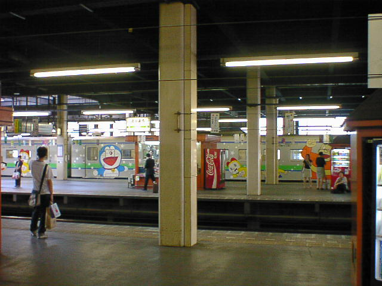

７月０４日
今日もいつものように朝食をとり、ヤヌスの鏡を見終わったあと９時半にチェックアウト。もうここに戻ってくることは無い。景色を目に焼き
付けながら北海道大学内を南下し札幌駅方面に向かった。今日の天気予報では曇りだったが実際はかなり晴れて日焼けできそうだった。
もう特に行きたいところも無いので午前中は最後の札幌を惜しみつつ自転車で走り回った。１３時頃、おなかがすいてきたので（というより
はすかした）昨日行けなかったサッポロビール園へ向かった。なんか普通のレストランと勝手が違っていていくつか食事のための建物が
あって、受付をするときにどこどこへ行ってくださいと言われるのでそこに行って食べようなしくみになっている。周りが騒がしい中、ひとりもく
もくとジンギスカンを食べ１時間ほどでビール園を後にした。これでひと通り目的を達成したので札幌を後にし、北広島へ再び向かう。
昨日も立ち寄った参番館でケーキを食べマスター（おばちゃん）と１時間半くらい北広島話をし、空港へ。誰かと北広島の話をしたのは初
めてだったのでかなりうれしかった。
新千歳空港に着いたのは５時半くらいで、さっそくそこで自転車を預けお土産あさりに走った。今年は去年よりひかえめにし（かばんに入
らなかったので）安くあげた。それでもリュックはパンパンになり結構重たくなった。あとは飛行機に乗って帰るだけ、明日は会社なのではや
く寝よう、などと考えていたが世の中そんなに甘くは無かった。搭乗前の情報では東京は雨らしい。帰り大変だな～と思った。出発は１９時１
０分なので１５分前くらいに乗りこみ日記を書きながら離陸を待っていたのだが定刻を過ぎても一向に動き出す気配が無い。しばらくすると
機内放送が入り、それによると東京では大雨が降っているらしく管制塔から出発の許可が出ないらしい。羽田空港の上空では着陸できない
飛行機たちがうろうろしているようだ。今日中に帰れるのかな～と心配しながらさらにしばらくすると１９時のニュースを放送するというアナウ
ンスが入ったので早速イヤホンをして見てみると、なんか国会のニュースが始まり天気については何も無かった。頭の中は「・・・」状態だっ
た。結局５０分後にやっと動き出しやっと出発かと思ったら今度は滑走路でとまり動かなくなった。離陸の許可がでないらしい。１０分後突然
動き出し離陸した。羽田に着いたのは２１時４０分（１時間遅れ）、空港から出てくる頃には２２時になっていた。もう雨はやんでいてどれほど
凄いことになっていたかなんて想像も出来なかった。自転車を抱えリムジンバスの券を買いに行くと現在新宿まで１２０分かかると言われ
た。最後の選択。それでもバスで帰るかまたは電車で帰るか。ぐったりしていたので遅くてもバスで帰るほうを選んだ。すると実際は道路ガ
ラガラで４０分で着いてしまった。最後だけついてて良かった。２３時頃に家につき風呂に入ってすぐに寝た。めでたし、めでたし。

ドラえもん電車。ここでしか見れないらしい？
戻る